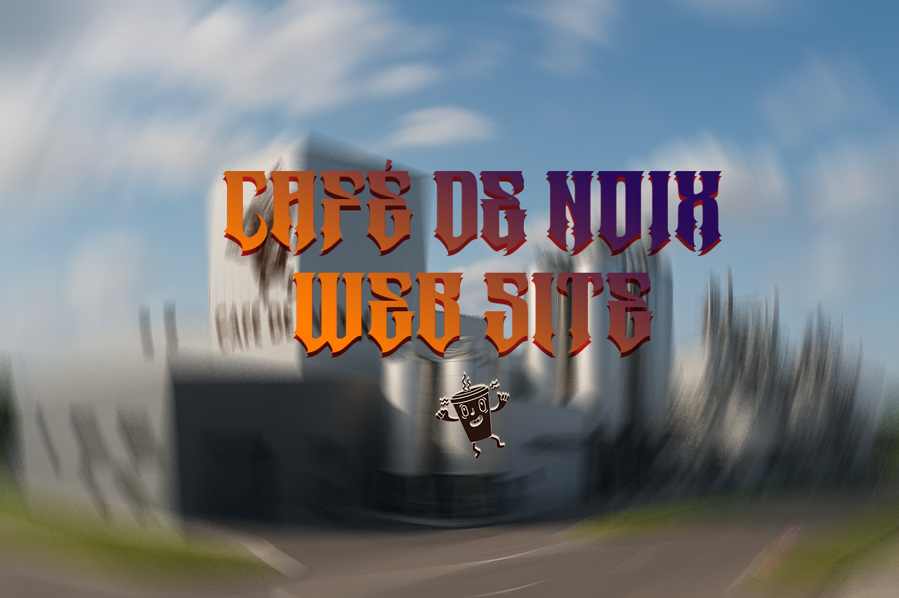

Meus projetos

A Cafeteria "Café de Noix" agora é na palma de sua mao!!
Este projeto é uma cafeteria online que apresenta um catálogo de cafés especiais, com informações detalhadas sobre cada produto, incluindo origem, método de preparo e notas de sabor. A página é estilizada com CSS para uma navegação agradável e intuitiva, e utiliza fontes externas do Google Fonts para melhorar a identidade visual. Em breve, contará com integração para pedidos e pagamentos online.